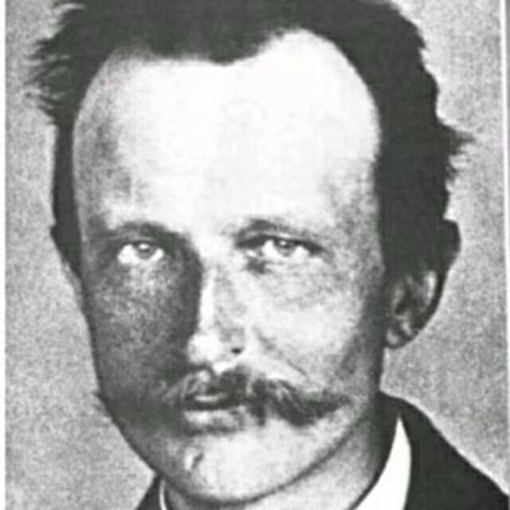

01
PERSONAL WEBSITE · 2026
个人网站
用设计与代码建立自己的网络名片，也作为所有作品和思考的长期入口。

BASED IN CHINA
BUILDING FOR THE WEB
你好，我是浪里白条。这是我的个人主页，也是一个长期生长的知识档案。我关注技术如何真正服务于人，并享受把模糊的问题变成清晰方案的过程。
这个网站将陆续收录我的项目实践、学习笔记与阶段思考。比起一份静态简历，我更希望它能呈现一条持续前进的轨迹。
LET'S CONNECT